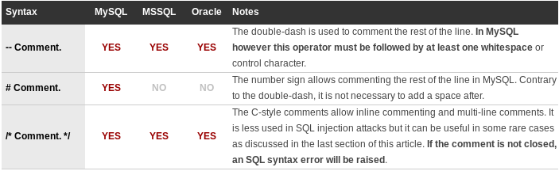

Using Comments to Simplify SQL Injection
Terminating the query properly is one of the main difficulties an attacker may encounter while testing. Frequently, the problem comes from what follows the integrated user parameter. This SQL segment is part of the query and the malicious input must be crafted to handle it without generating syntax errors. This article explains how comments can be used to eliminate trailing characters and simplify the attack.
Comment Syntax
Before jumping in the main subject, let’s enumerate the different ways to comment SQL code for MySQL, SQL Server (MSSQL) and Oracle.

It should also be mentioned that MySQL supports alternative forms of comments. They are prettty similar to c-style comments and do not represent any additional value for an attacker who wants to terminate a query.
Terminating Query
Using line commenting to terminate a query is best illustrated by an example. The vulnerable script and the attack is shown below.
The script - Building a query without sanitizing data.
$sql = "SELECT first_name, last_name, email FROM members WHERE username='".$value."' AND showpublic=1"
Attacker input using line commenting.
admin' --
Query generated.
SELECT first_name, last_name, email FROM members WHERE username='admin' -- ' AND showpublic=1
By using line commenting, the attacker eliminates the last condition and does not even have to handle the trailing quote. The same result could have been achieved without line commenting, but the crafted parameter would have been slightly more complex. The real gain from this technique is realized when the query is complex. For example, if a restrictive HAVING clause is present or if an INTERSECT operator was used after the vulnerable parameter. This is also true for many cases where user input is integrated in a subquery.
Inline Comments
The last situation where comments can be used to simplify an SQL injection attack is when multiple vulnerable inputs are integrated in the same query. Given the attacker has a good idea of how the input is integrated, he could use C-style comments to eliminate a part of the query. Below is an example.
Script eliminates all dashes and number signs in the input, then it integrates it in query.
$sql = "INSERT INTO members (username, isadmin, password) VALUES ('".$username."', 0, '".$password."')"
Attacker's input (username 1st line, password 2nd line).
attacker', 1, /*
*/'pwd
Query generated (forces administrator rights).
INSERT INTO members (username, isadmin, password) VALUES ('attacker', 1, /*', 0, '*/'pwd')
As mentionned earlier, this technique is rarely used in real situations. However, it might be useful to overcome difficulties met when:
Other forms of comment are impossible to use (for example if the double-dash is filtered by the application).
It is not possible to use stacked queries.
It is not possible to make a UNION attack.